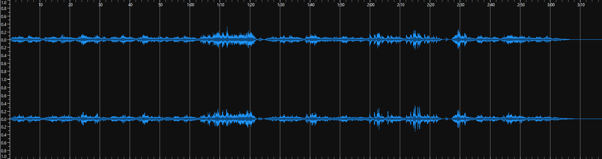
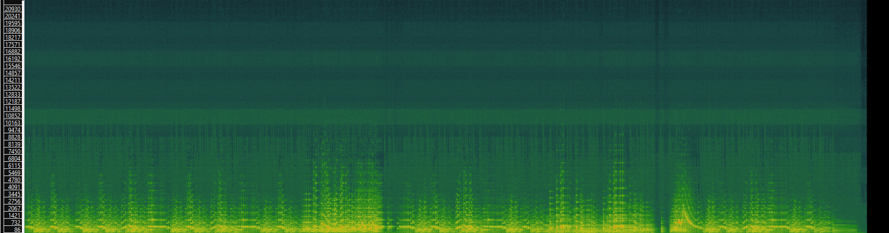
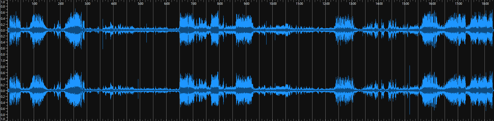
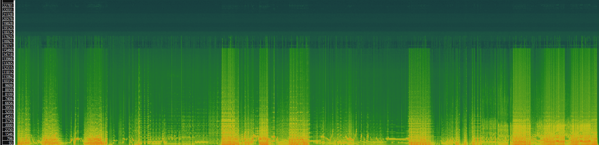
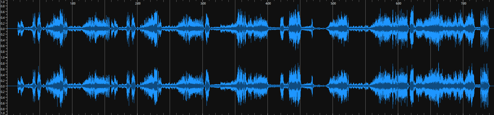
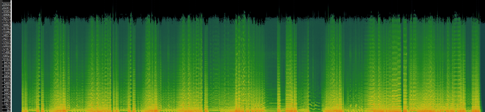

Task 1 - Finding and Describing Audio
| Audio | |||
|---|---|---|---|
| Title | Für Elise, WoO 59 | Fantasia in C minor, Op.80 | Symphony No. 5, Op.67 - Allegro con brio |
| Artist(s) | Peter Bradley-Fulgoni | Rudolf Serkin (piano)
New York Philharmonic (orchestra) Leonard Bernstein (conductor) Westminster Symphonic Choir (chorus) Warren Martin (chorus director) | Fulda Symphonic Orchestra |
| Composer | Ludwig van Beethoven | Ludwig van Beethoven | Ludwig van Beethoven |
| Copyright | CC-BY-NC-ND 4.0 | Public Domain | CC BY-SA 3.0 |
| Genre | Classical | Classical | Classical |
| Source | IMSLP | IMSLP | IMSLP |
| File Format | MP3 | MP3 | OGG |
| Number of Channels | 2 | 2 | 2 |
| Sample Rate | 44.1kHz | 48kHz | 44.1kHz |
| Bits per Second | 128kbps | 181kbps | 1411kbps |
| Duration | 00:03:17 | 00:18:21 | 00:07:28 |
Task 2 - Analysis using SonicVisualizer
Fur Elise
 Fantasia
 Symphony No. 5
 As the name implies, waveforms only really show us the form of the wave of sound, ie., the magnitude of the sound at a given time. time-frequency analysis on the otherhand allows us to look more clearly at the frequencies, or notes at a given time. This allos us to say a lot more about the music when analysing it.
For example, the crescendo at roughly 4:45 in Symphony No.5 features a prominent high-note that stands apart from the lower sections of the orchestra. This only becomes apparent through listening or through looking at the time-frequency chart.